2026 Advanced Higher Chemistry - Paper 1 questions
Source: Scottish Qualifications Authority (SQA) / Qualifications Scotland. This is a StemInteract HTML companion, not an official HTML edition. Selectable text is supplied alongside original page images. Use the images or original PDF for equations, powers, fractions, vector notation, tables and diagrams; text extraction cannot fully preserve mathematical layout.
Jump to a question
PDF page 1
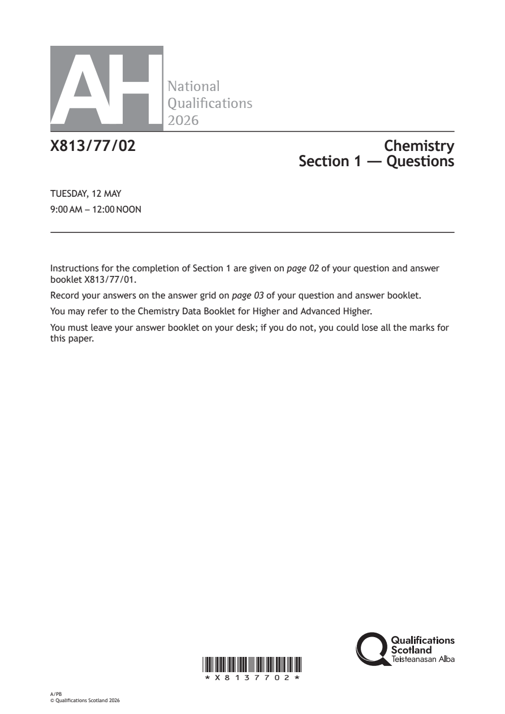
Selectable page text
AH
National
Qualications
2026
X813/77/02 Chemistry
Section 1 — Questions
TUESDAY, 12 MAY
9:00 AM – 12:00 NOON
Instructions for the completion of Section 1 are given on page 02 of your question and answer
booklet X813/77/01.
Record your answers on the answer grid on page 03 of your question and answer booklet.
You may refer to the Chemistry Data Booklet for Higher and Advanced Higher.
You must leave your answer booklet on your desk; if you do not, you could lose all the marks for
this paper.
*X8137702*
A/PB
© Qualifications Scotland 2026PDF page 2
Paper 1, Question 1Paper 1, Question 2Paper 1, Question 3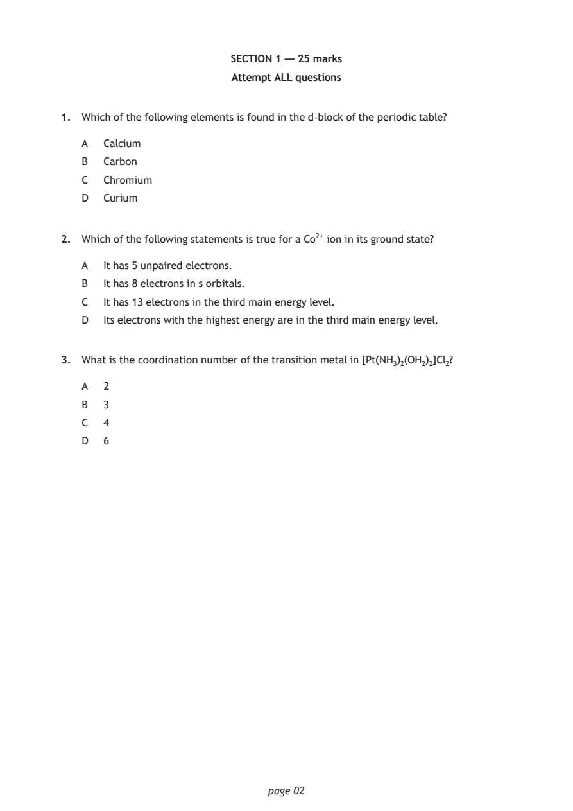
Selectable page text
SECTION 1 — 25 marks
Attempt ALL questions
1. Which of the following elements is found in the d‑block of the periodic table?
A Calcium
B Carbon
C Chromium
D Curium
2. Which of the following statements is true for a Co²⁺ ion in its ground state?
A It has 5 unpaired electrons.
B It has 8 electrons in s orbitals.
C It has 13 electrons in the third main energy level.
D Its electrons with the highest energy are in the third main energy level.
3. What is the coordination number of the transition metal in [Pt(NH₃)₂(OH₂)₂]Cl₂?
A 2
B 3
C 4
D 6
page 02PDF page 3
Paper 1, Question 4Paper 1, Question 5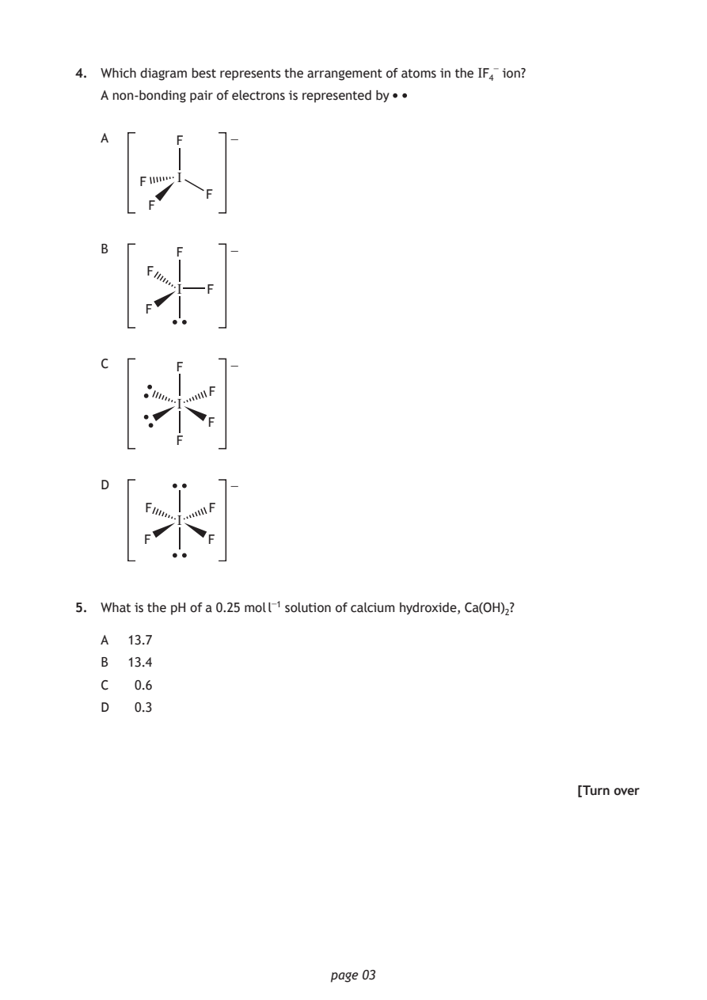
Selectable page text
4. Which diagram best represents the arrangement of atoms in the IF₄⁻ ion?
A non‑bonding pair of electrons is represented by
A F −
I
F
F
F
B F −
F
I F
F
C F −
F
I
F
F
D −
F F
I
F F
5. What is the pH of a 0.25 mol l⁻¹ solution of calcium hydroxide, Ca(OH)₂?
A 13.7
B 13.4
C 0.6
D 0.3
[Turn over
page 03PDF page 4
Paper 1, Question 6Paper 1, Question 7Paper 1, Question 8Paper 1, Question 9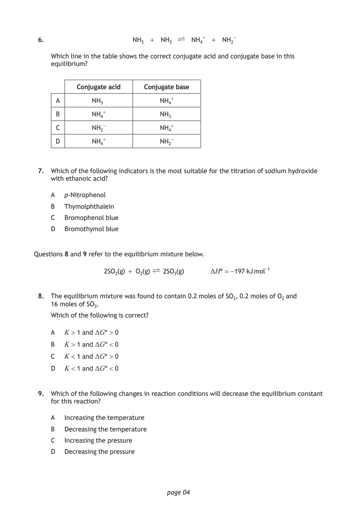
Selectable page text
6. NH₃ + NH₃ ∏ NH₄⁺ + NH₂⁻
Which line in the table shows the correct conjugate acid and conjugate base in this
equilibrium?
Conjugate acid Conjugate base
A NH₃ NH₄⁺
B NH₄⁺ NH₃
C NH₂⁻ NH₄⁺
D NH₄⁺ NH₂⁻
7. Which of the following indicators is the most suitable for the titration of sodium hydroxide
with ethanoic acid?
A p‑Nitrophenol
B Thymolphthalein
C Bromophenol blue
D Bromothymol blue
Questions 8 and 9 refer to the equilibrium mixture below.
2SO₂(g) + O₂(g) ∏ 2SO₃(g) ΔH° = −197 kJ mol⁻¹
8. The equilibrium mixture was found to contain 0.2 moles of SO₂, 0.2 moles of O₂ and
16 moles of SO₃.
Which of the following is correct?
A K > 1 and ΔG° > 0
B K > 1 and ΔG° < 0
C K < 1 and ΔG° > 0
D K < 1 and ΔG° < 0
9. Which of the following changes in reaction conditions will decrease the equilibrium constant
for this reaction?
A Increasing the temperature
B Decreasing the temperature
C Increasing the pressure
D Decreasing the pressure
page 04PDF page 5
Paper 1, Question 10Paper 1, Question 11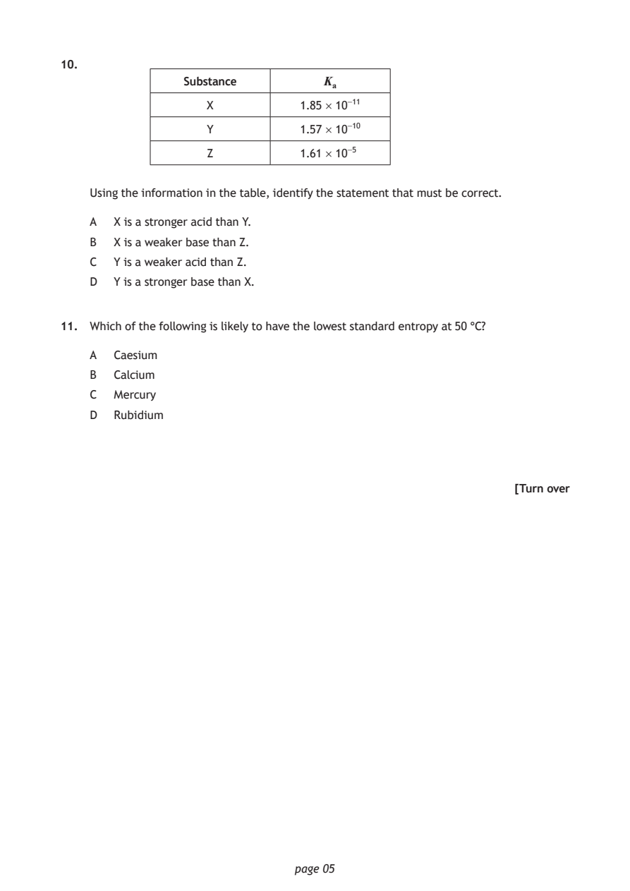
Selectable page text
10.
Substance Kₐ
X 1.85 × 10⁻¹¹
Y 1.57 × 10⁻¹⁰
Z 1.61 × 10⁻⁵
Using the information in the table, identify the statement that must be correct.
A X is a stronger acid than Y.
B X is a weaker base than Z.
C Y is a weaker acid than Z.
D Y is a stronger base than X.
11. Which of the following is likely to have the lowest standard entropy at 50 °C?
A Caesium
B Calcium
C Mercury
D Rubidium
[Turn over
page 05PDF page 6
Paper 1, Question 12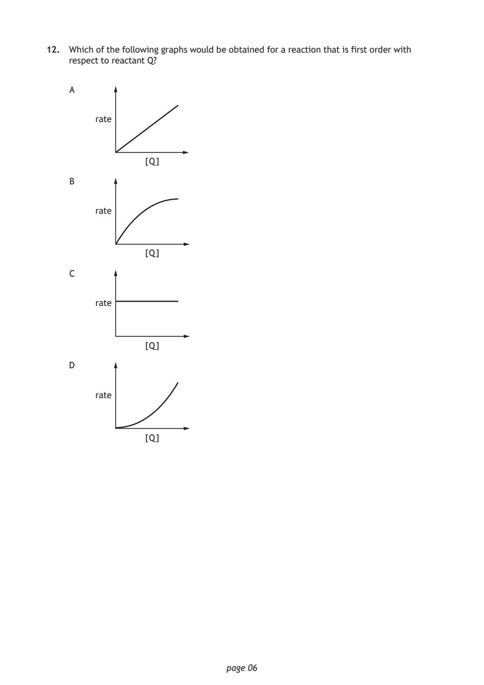
Selectable page text
12. Which of the following graphs would be obtained for a reaction that is first order with
respect to reactant Q?
A
rate
[Q]
B
rate
[Q]
C
rate
[Q]
D
rate
[Q]
page 06PDF page 7
Paper 1, Question 13Paper 1, Question 14Paper 1, Question 15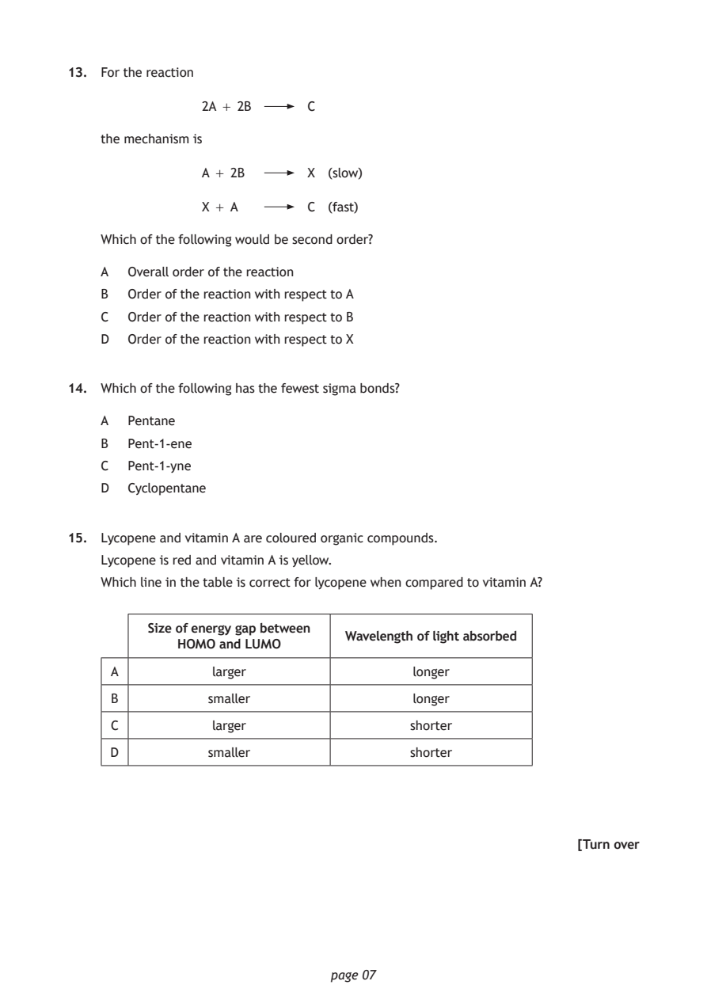
Selectable page text
13. For the reaction
2A + 2B C
the mechanism is
A + 2B X (slow)
X + A C (fast)
Which of the following would be second order?
A Overall order of the reaction
B Order of the reaction with respect to A
C Order of the reaction with respect to B
D Order of the reaction with respect to X
14. Which of the following has the fewest sigma bonds?
A Pentane
B Pent‑1‑ene
C Pent‑1‑yne
D Cyclopentane
15. Lycopene and vitamin A are coloured organic compounds.
Lycopene is red and vitamin A is yellow.
Which line in the table is correct for lycopene when compared to vitamin A?
Size of energy gap between
Wavelength of light absorbed
HOMO and LUMO
A larger longer
B smaller longer
C larger shorter
D smaller shorter
[Turn over
page 07PDF page 8
Paper 1, Question 16Paper 1, Question 17Paper 1, Question 18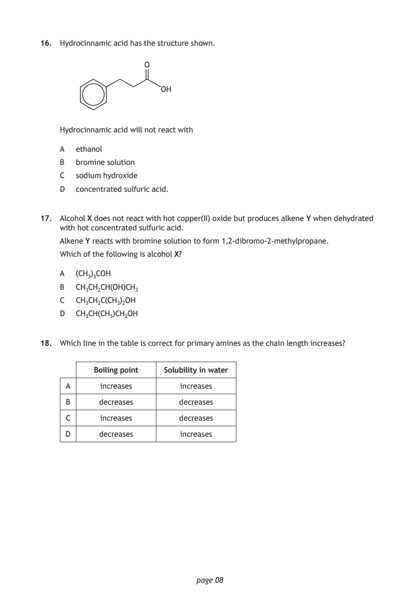
Selectable page text
16. Hydrocinnamic acid has the structure shown.
O
OH
Hydrocinnamic acid will not react with
A ethanol
B bromine solution
C sodium hydroxide
D concentrated sulfuric acid.
17. Alcohol X does not react with hot copper(II) oxide but produces alkene Y when dehydrated
with hot concentrated sulfuric acid.
Alkene Y reacts with bromine solution to form 1,2‑dibromo‑2‑methylpropane.
Which of the following is alcohol X?
A (CH₃)₃COH
B CH₃CH₂CH(OH)CH₃
C CH₃CH₂C(CH₃)₂OH
D CH₃CH(CH₃)CH₂OH
18. Which line in the table is correct for primary amines as the chain length increases?
Boiling point Solubility in water
A increases increases
B decreases decreases
C increases decreases
D decreases increases
page 08PDF page 9
Paper 1, Question 19Paper 1, Question 20Paper 1, Question 21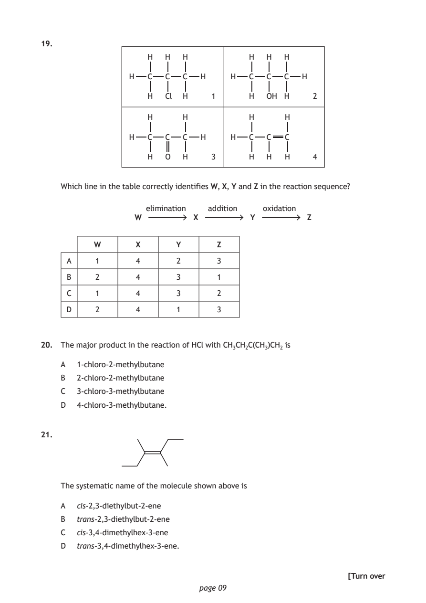
Selectable page text
19.
H H H H H H
H C C C H H C C C H
H Cl H 1 H OH H 2
H H H H
H C C C H H C C C
H O H 3 H H H 4
Which line in the table correctly identifies W, X, Y and Z in the reaction sequence?
elimination addition oxidation
W X Y Z
W X Y Z
A 1 4 2 3
B 2 4 3 1
C 1 4 3 2
D 2 4 1 3
20. The major product in the reaction of HCl with CH₃CH₂C(CH₃)CH₂ is
A 1‑chloro‑2‑methylbutane
B 2‑chloro‑2‑methylbutane
C 3‑chloro‑3‑methylbutane
D 4‑chloro‑3‑methylbutane.
21.
The systematic name of the molecule shown above is
A cis‑2,3‑diethylbut‑2‑ene
B trans‑2,3‑diethylbut‑2‑ene
C cis‑3,4‑dimethylhex‑3‑ene
D trans‑3,4‑dimethylhex‑3‑ene.
[Turn over
page 09PDF page 10
Paper 1, Question 22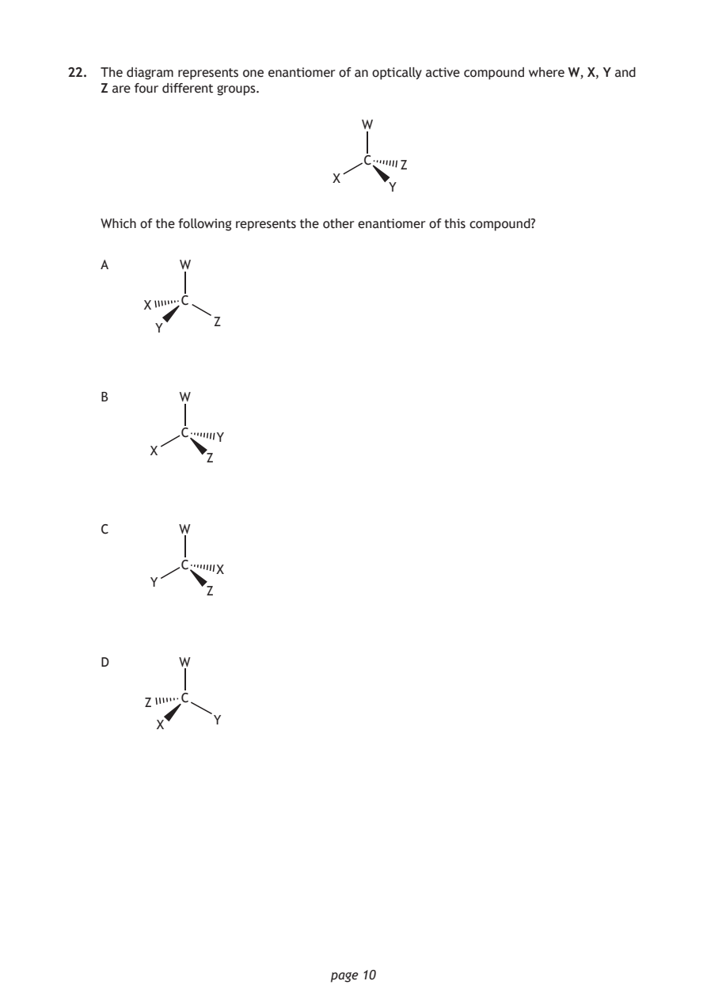
Selectable page text
22. The diagram represents one enantiomer of an optically active compound where W, X, Y and
Z are four different groups.
W
C
Z
X
Y
Which of the following represents the other enantiomer of this compound?
A W
C
X
Z
Y
B W
C
Y
X
Z
C W
C
X
Y
Z
D W
C
Z
Y
X
page 10PDF page 11
Paper 1, Question 23Paper 1, Question 24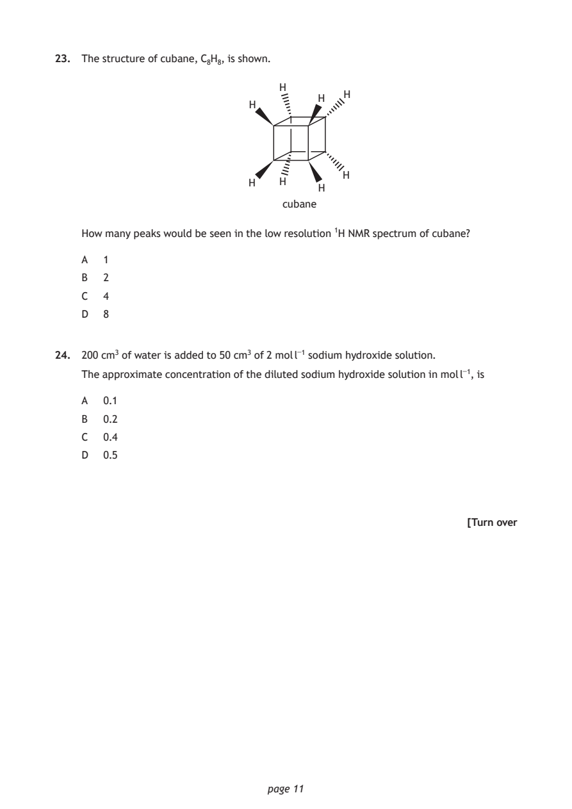
Selectable page text
23. The structure of cubane, C₈H₈, is shown.
H
H
H
H
H
H H
H
cubane
How many peaks would be seen in the low resolution ¹H NMR spectrum of cubane?
A 1
B 2
C 4
D 8
24. 200 cm³ of water is added to 50 cm³ of 2 mol l⁻¹ sodium hydroxide solution.
The approximate concentration of the diluted sodium hydroxide solution in mol l⁻¹, is
A 0.1
B 0.2
C 0.4
D 0.5
[Turn over
page 11PDF page 12
Paper 1, Question 25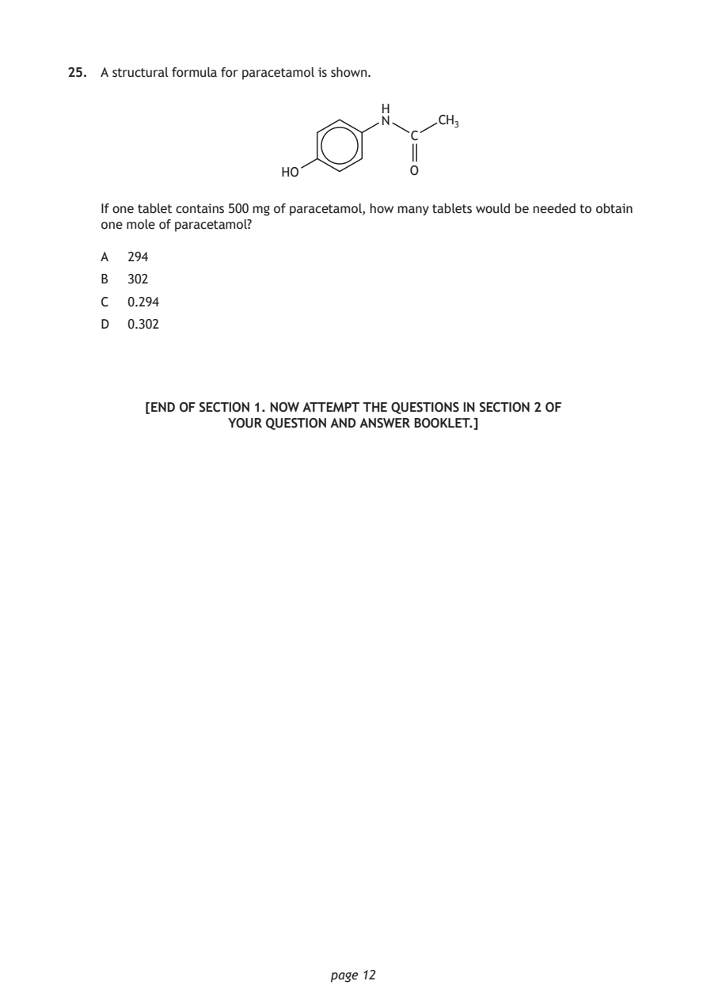
Selectable page text
25. A structural formula for paracetamol is shown.
H
N CH₃
C
HO O
If one tablet contains 500 mg of paracetamol, how many tablets would be needed to obtain
one mole of paracetamol?
A 294
B 302
C 0.294
D 0.302
[END OF SECTION 1. NOW ATTEMPT THE QUESTIONS IN SECTION 2 OF
YOUR QUESTION AND ANSWER BOOKLET.]
page 12